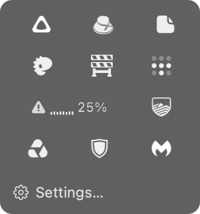
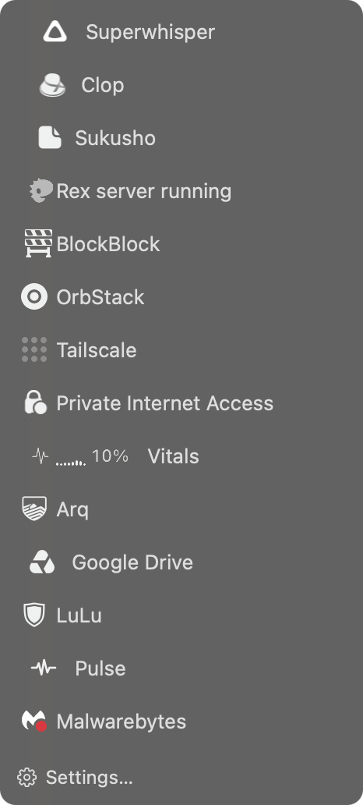

Not A Hot Dog
Hides the menu bar icons you don't need to see. Click the hot dog to get them back.


Download for Mac
Tested on macOS 27.3 on Apple silicon · Free and open source · GitHub
Hides the menu bar icons you don't need to see. Click the hot dog to get them back.

